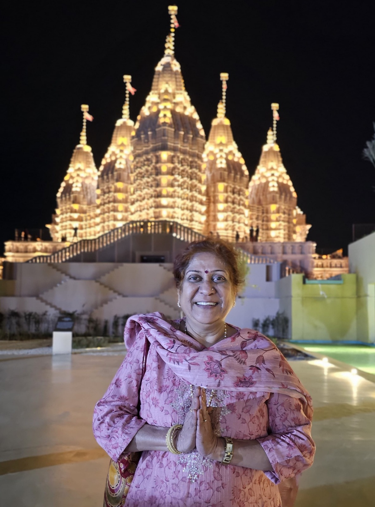
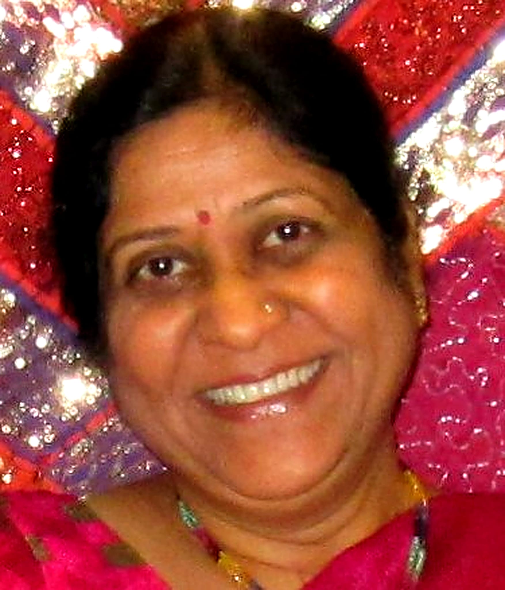

ग

परिचय
गीतांजलि
सक्सेना
Gitanjali Saxena
तीन दशकों से हिंदी साहित्य और पत्रकारिता की अनवरत यात्रा — अबू धाबी से।
कवयित्री
लेखिका
पत्रकार
संपादक
Gitanjali Saxena
तीन दशकों से हिंदी साहित्य और पत्रकारिता की अनवरत यात्रा — अबू धाबी से।

आस्था पटल खिले फूल, विघ्न हरे, यही शक्ति पीठ,
आशावादी भाव, दिलों में आस्था, सिर्फ दीप ही जलाए,
आस्था जुड़ी यात्रा रहें लदी, अनेक ईश्वरीय वरदानों से,
जीवन समर्पण, विश्वास डोर में, पिरोए सिद्धांत इसके,
है एक अनुभूति, डूब जाने में ही, सच्चा आत्मिक सुख,
दिलों को जोड़े, संस्कृतियों को सजाए, है प्रकृति इसकी,
केंद्र ही नहीं, सौहार्द व सामंजस्य का 'अभूतपूर्व प्रतीक'
गीतांजलि सक्सेना पिछले तीन दशकों से हिंदी साहित्य और पत्रकारिता के क्षेत्र में सक्रिय हैं। नवभारत टाइम्स में उनका लेखन पाठकों को एक अनूठा और संवेदनशील दृष्टिकोण देता रहा है।
अबू धाबी में बसी इस हिंदी लेखिका की कलम कभी नहीं रुकती। भारतीय महिला संघ (ILA), अबू धाबी की प्रतिष्ठित जयोति पत्रिका की संपादक के रूप में वे हिंदी साहित्य की अलख जगाती हैं। PIB-मान्यता प्राप्त पत्रकार के रूप में उनकी पहचान देश-विदेश में है।
उनकी रचनाएं — चाहे वह कविता हो, लेख हो, या संस्मरण — एक विशेष प्रवासी अनुभव को व्यक्त करती हैं। परदेस में रहकर देस की खुशबू को शब्दों में पिरोना उनकी विशेषता है। शब्दों का यह सफ़र जारी है… और जारी रहेगा।
For three decades, Gitanjali Saxena has woven words into the fabric of Hindi literature from Abu Dhabi. A PIB-accredited journalist, editor of the prestigious Jyoti magazine, and a poet whose verses carry the fragrance of India across the desert — her writing is a bridge between two worlds.
न रास्ते हैं सरल न सुगम, न ही सीमांकन किया मंजिलों का,
सिर्फ क़लम दवात से लगा रहा लगाव, जो मिला है विरासत में भी…
सिर्फ शब्दों से खिलवाड़ ही नहीं, माला में पिरोना भी है फ़ितरत,
कभी भी न थमने वाला लेखन सिलसिला यूं ही जारी रहेगा हमेशा…
हर बार, कुछ नया, कुछ हट कर,
चुनौती ले चले हैं इस सफ़र में।
"Neither are the paths easy nor smooth, nor have the destinations been marked —
only an enduring love for pen and ink, inherited as a legacy…
Not just playing with words, but stringing them into a garland — it is my nature,
a writing journey that will never cease, ever…
Every time, something new, something different —
carrying forward the challenge on this path."

The Magic of Words That Flow from the Pen…
अजीबोगरीब है इनकी दुनिया, बेहद खूबसूरत और निराली जिसमें हर कोई डूब जाने की चाहत रखता है.. क्योंकि जहां एक ओर इनका स्वरूप नौ-रसों से लबालब भरा है तो दूसरी ओर इनका विचित्र स्वभाव ही तो है, जो अनेकों अनदेखी और अनकही कहानियों को कागजों पर लाकर जन्म दिया करते हैं। 'शब्दों' के बिछाये चक्रव्यूह में घुसने का दुस्साहस सिर्फ कलम ही तो कर सकती है।
यही नहीं जीवन-चक्र की बागडोर भी इन्हीं हाथों में होती है। यह सिलसिला जन्म प्रमाणपत्र से शुरू होते हुए अंतिम पड़ाव को प्रमाणित करने तक चलता आ रहा है। कहने का तात्पर्य यह है, कि जीवन के हर पहलू में शब्दों का अहम स्थान है। नवजात शिशु के मुंह से निकला पहला शब्द (मां) का भाव अनेक शब्दों के बीजों को जनम देता है, जो वात्सल्य की परिपूर्णता को दर्शाता है। मातृत्व अवस्था के इन अनमोल स्नेही क्षणों के पदचिह्न ही अपनी छाप छोड़ बहुत कुछ कह जाते हैं।
आज फिर, जब मैंने अपने परिजनों और कुछ नये, कुछ पुराने मित्रों से रूबरू होते हुए संवाद के लिए कलम उठाई। यूं लगा कि बहुत कुछ लिखने की चाह की इस कोशिश में मानो शब्दों के कदम खुद ही चल पड़े हों। दो पल सोचने के बाद इस का अहसास भी हुआ कि कलम से लिखे, कागज पर उतरे.. हर शब्द यह ही तो प्रमाणित करते हैं कि, वह कलम की इस ताकत और उसकी पहुंच से न केवल परिचित ही है, बल्कि शब्दों को इसका अनुभव, अभ्यास भलीभांति प्राप्त है। इसमें भी कोई दो राय नहीं है कि अगर कलम नहीं होती तो शब्दों का दायरा सीमित रह जाता। कलम के हाथ लगते ही, न जाने कहां से शब्दों के जरिये अनकहे विचार व बातें सहजता से पन्नों पर उतर पाती हैं। यह शब्दों का ही तो खेल है सारा कि अचेतन मन को भी जगा देता है और दिलों में छुपे राज़ खुल कर जुबान पर आ जाते हैं।
कलम का अस्तित्व और कागज की पहचान हमेशा से ही शब्दों के मोहताज थी और रहेगी। ऐसा ही तो है शब्दों का खेल.. हर एक शब्द का रूप परिपूर्ण होता है और उसके अर्थ में ही तो उसकी खूबसूरती छुपी रहती है.. जैसे 'दयालु' शब्द में अगर मनुष्य के प्रति अपनेपन का एहसास है जो रचनात्मक शक्ति को भी परिभाषित करता है, तो 'आशीर्वाद' शब्द में अनेकों दुआएँ व स्नेह छुपी हैं। दिलचस्प है कि अनेक शब्दों में परिवर्तन को प्रभावित करने में सक्षमता होती है। विवेकानंद ने एक सत्संग में शब्दों की महिमा का जिक्र करते कहा कि अगर हमें यह ईश्वर के सानिध्य में ले जा सकते हैं, तो हमें भावना से भर उत्तेजित भी कर सकते हैं। इसीलिए सोच समझ कर ही बोलें, क्योंकि शब्द आप को ही नहीं, अन्य को भी तो ठेस पहुंचा सकते हैं।
कलम से लिखा हर शब्द का प्रयोग उसकी महिमा को दर्शाता है। शब्दों की पहुँच और उसके वजूद को हल्के से लेने की नादानी नहीं करनी चाहिये। अरे..! यही तो वह जादुई छड़ी है.. जिसमें प्रशंसा का श्रृंगार भी है, तो व्यंग का प्रहार भी, और तो और दिग्गज विचारकों का भंडार भी। शब्दों को ढालते ही भावों की अभिव्यक्ति रचनाओं का रूप धारण कर लेती है। अगर एक ओर नृत्य में घुंघरू की झंकार है, तो शब्दों के वार से शत्रुओं को ललकार दे कर सल्तनतों को पराजित करने के उदाहरण भी तो मौजूद हैं।
बिछे है जाल शब्दों में, छुपे है राज़ भी, है संभाले सत्य या झूठ कमान,
निःशब्द बोले, पढ़े तो बने खामोशी, बातें पाटे फासले, अपशब्द भी यही,
सवाल है तो जवाब भी यही, इन्हीं से सीखा हमने 'अभिव्यक्ति स्वतंत्रता',
जीवन काल लेखा-जोखा इन हाथों, कागज उतरे बने कानून व संविधान,
शब्द ही प्रवचन मंत्र, है ईश्वरीय वरदान, हो दुआ व अज़ान भी इन्हीं से।
दोगले अर्थ भी इन्हीं से, 'हां' या 'नहीं' शब्द तय करें, दुनियादारी स्वरुप,
अगर इंसान पहचान इन्हीं से, तो रिश्तों का सार भी, है छिपा इसी में,
'शब्दों का खेल' है नहीं सरल, इन्हें तोड़ना-मोड़ना, तराश कर पिरोना,
हैं यह महारथी, पृष्ठों पर कलम स्याही, साथ निभाना, है निपुणता बेमिसाल,
आज फ़ेसबुक और इंस्टाग्राम फॉलोअर न होते, न ही बनता वॉटस्प ग्रुप।
'शब्दों' की हेराफेरी ही तो है काव्य पाठ, है भावों की उत्कृष्ट 'अनुभूति अनुभव',
न होती कलम-शब्द 'जुगलबंदी' तो न बजते साज़, और न ही होते सुर व ताल।